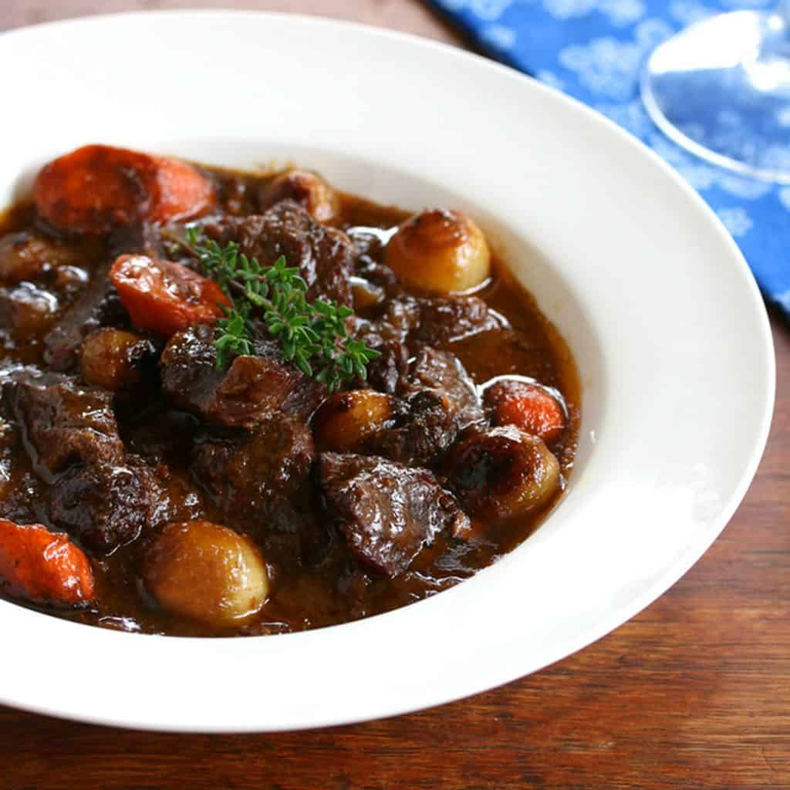

Beef Bourguignon

Description
Beef Bourguignon is a traditional French stew made with beef braised in red wine, typically from the Burgundy region.
The dish is slow-cooked with vegetables, such as onions, carrots, and mushrooms, along with herbs like
thyme and bay leaves, creating a rich, savory flavor. It's often served with potatoes, rice, or crusty bread.
Ingredients
- Wine from the Burgundy Region
- Brandy
- Onions
- Carrots
- Mushrooms
- Can of tomato paste
- Olive Oil
- Parsley
- Bay leaf
- garlic
- Black Peppercorns
- Salt and pepper
- 2 pounds of cubed beef chuck roast
- Bacon
- Flour
- Beef broth
- Butter
Steps
- Marinate the meat for two days in advance. Chill in the fridge.
- Brown the beef in olive oil until browned on all sides, then transfer to a bowl.
- Saute the bacon in the same skillet, then move the bacon to the beef bowl.
- Deglaze the skillet with a cup of the marinade.
- Saute the onions and carrots. Move the veggies to the bowl with the meat.
- Add the flour to the skillet and stir until brown.
- Add the tomato paste, garlic, broth, marinade, and salt and pepper.
- Whisk until smooth, then transfer to the bowl with the meat and veggies.
- Transfer the mixture to a baking dish and bake for three hours.
- Saute the mushrooms, then stir the mushrooms into the bourguignon
- Serve over potatoes, egg noodles, or rice.